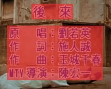
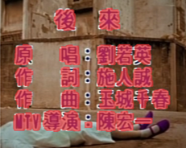
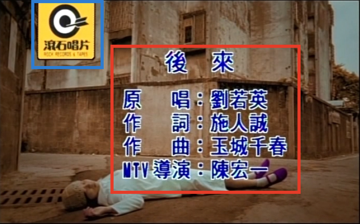

Technical report · Video overlay removal
Hint, not hole.
HintErase removes burned-in subtitles, karaoke lyrics, titles, credits and logos from full-length videos. It takes a hint of where the overlay is, and it still works when that hint is wrong.
- Overlay types
- Subtitles, lyrics, titles, credits, logos
- Hint
- Box, pixel mask, or rough guess
- Length
- Full episodes and music videos, multi-shot
- Sources
- 480p to 1080p sources; Ultra-HD delivery
Results
Compare any clip side by side.
Each player shows two views of the same frames. Pick what goes on the left and on the right: the input, the hint we gave, or our result.
Overview video
Three minutes of full-length results.
The overview video will be embedded here.
Set overview_video.bilibili or overview_video.youtube in cases.json.
Why a hint, not a hole
Detectors are wrong in both directions.
Most erasers take a mask as a hole: everything inside is regenerated, everything outside is copied. A stroke the mask misses stays in the output. Background the mask over-covers gets repainted. HintErase reads the mask as evidence and looks at the whole frame.

The hole is too big
The mask covers whole lines, including the background between and around the characters. An eraser that treats it as a hole repaints all of it, and clean texture is lost.

The hole is too small
The mask follows each stroke. Outlines, glows and compression halos just outside it stay in the output, and any stroke the segmenter misses survives.

A box is enough
One box per text block (red) and per logo (blue), and the model still sees the whole frame with the overlay in place. It removes every stroke, outline and glow, and keeps the background between characters.
- Complete. Strokes, outlines and glows the hint misses are removed too.
- Faithful. Background that a loose box happens to cover is kept.
- Selective. Scene text stays, even when a box lands on it.
From model to delivery
The model sees a short window; delivery means a whole long video.
These problems hardly show on a few seconds of footage; they surface together only on a complete long video, and if any step below fails, the output is unusable.
-
① Input preprocessing
ProblemSources vary: interlacing, compression artifacts, non-square pixels.
SolutionDetect and deinterlace automatically; crop windows at the source scale and aspect.
-
② Shot segmentation
ProblemWindows that cross a cut mix two shots; fades and flashes create false cuts.
SolutionDetect shots and split the work at cuts; merge false cuts across fades and dissolves.
-
③ Erasure hints
ProblemDetectors miss frames, boxes jitter, and small marks such as logos get missed.
SolutionCombine segmentation with localization, and extend hints in time to fill missed frames.
-
④ Inference planning
ProblemA long video does not fit in GPU memory, and most of its frames carry no overlay at all.
SolutionProcess only the stretches that carry overlays, streaming window by window; memory stays fixed regardless of video length.
-
⑤ Paste-back
ProblemReplacing whole frames softens untouched areas; leftover text hides in dark scenes.
SolutionReplace only pixels that actually changed, with a threshold that adapts to brightness.
-
⑥ Full-length output
ProblemDropped or duplicated frames; audio out of sync.
SolutionKeep the frame count exactly aligned with the source and mux the original audio back in.
-
⑦ Ultra-HD delivery (optional)
ProblemOld footage is low-resolution, while re-releases often require Ultra-HD. Generative upscalers built on large models tend to alter what they enlarge: colors shift, faces and people change, and details are invented.
SolutionAfter erasure, our in-house high-fidelity super-resolution model upscales the clean video 4×, keeping the original colors, people and details.
Ultra-HD delivery
Old footage, erased and delivered in Ultra-HD.
Many re-releases start from low-resolution masters. HintErase removes the overlays at the source resolution, then our in-house super-resolution model upscales the clean video 4×. Unlike generative upscalers built on large models, which often shift colors, change faces and invent details, it is built for fidelity: colors, people and details stay true to the original. Sample footage for this stage is not shown here, because the clips feature identifiable people.
Cite
BibTeX
@techreport{zhang2026hinterase,
title = {Hint, Not Hole: Localization-Robust Video Overlay Removal},
author = {Zhang, Dongyang and Zhang, Wei and Zou, Renjie and Huang, Zhiwei},
institution = {Malanshan Audio \& Video Laboratory},
year = {2026},
url = {https://zdyshine.github.io/HintErase}
}